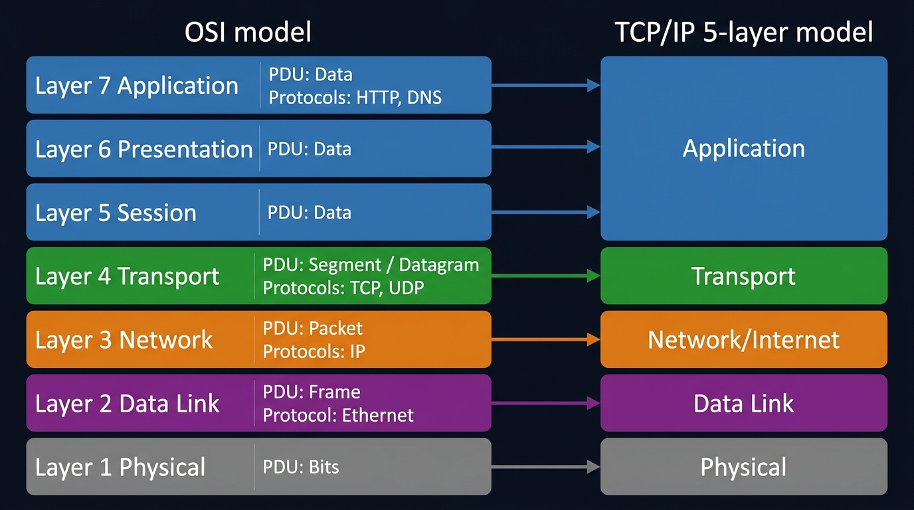
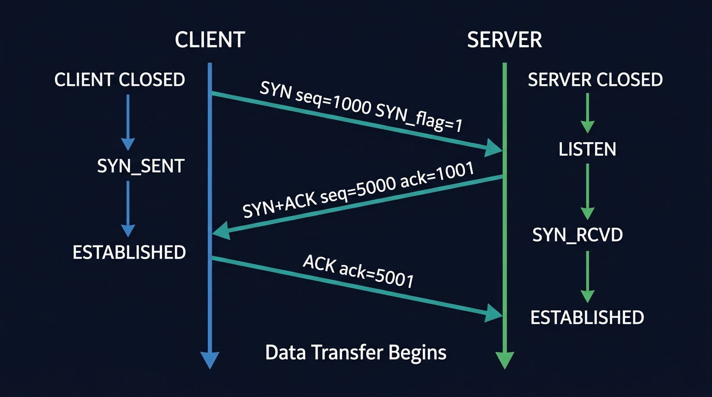

Track 1: Kunal Kushwaha — Full OSI Deep Dive
Track 2: Gate Smashers — Placement Rapid Revision
Computer Networks Master Curriculum
From physical bit transmission to application-layer protocols — a complete OSI/TCP/IP masterclass covering subnetting, routing algorithms, TCP handshakes, DNS resolution, and high-yield placement interview questions.
📚 8 Modules · 2 Video Tracks · 25+ Interview Q&As
🎯 Placement-Optimised · Interview Q&As
🧠 MathJax · Mermaid Diagrams · AI Assistant
A computer network is an interconnection of autonomous computing devices (nodes/hosts) connected via transmission media (guided cables or wireless RF) and communicating using a common set of protocols.
Core Performance Metrics
- Bandwidth: Theoretical maximum data carrying capacity of a link (bps, Mbps, Gbps).
- Throughput: Actual volume of successful data delivered per unit time.
- Latency (Delay): $T_{\text{total}} = T_{\text{propagation}} + T_{\text{transmission}} + T_{\text{queuing}} + T_{\text{processing}}$.
- Jitter: Variance in packet arrival latency (critical for VoIP and live gaming).
Network Classifications by Geographic Scale
- LAN (Local Area Network): Single building or campus. High bandwidth (100 Mbps to 10 Gbps), low latency, privately owned (Ethernet 802.3, Wi-Fi 802.11).
- MAN (Metropolitan Area Network): Spans an entire city/metro region (Cable TV networks, city-wide municipal fiber).
- WAN (Wide Area Network): Spans countries or continents. Interconnects heterogeneous LANs via telecom carriers, routers, and submarine optical fiber cables. The Internet is the premier public WAN.
Network Topologies
- Bus Topology: Single central backbone cable with terminators. Single point of failure; collisions occur under high load.
- Star Topology: Nodes connect to a central switch/hub. Modern standard; single link break doesn't affect others.
- Ring Topology: Circular loop; tokens pass unidirectionally. Zero collisions; break halts loop unless dual ring deployed.
- Mesh Topology (Full Mesh): Every node connects directly to every other node.
Number of duplex links: N(N - 1) / 2.
Ports per device: N - 1. Ultimate redundancy; high cabling cost.
Network communications rely on layered architectural abstractions to modularize protocol development and decouple physical hardware from software logic.
[ Layer 7: Application ] -> UI, HTTP/HTTPS, DNS, SMTP, SSH (Data/Message)
[ Layer 6: Presentation ] -> Encryption/Decryption, Compression, Character Sets (Data)
[ Layer 5: Session ] -> Dialog control, checkpointing, session tokens (Data)
[ Layer 4: Transport ] -> End-to-End Reliability, Port Addressing (Segments / Datagrams)
[ Layer 3: Network ] -> Logical IP Routing, Path Determination (Packets)
[ Layer 2: Data Link ] -> Hop-to-Hop Framing, MAC Addressing, Error Detection (Frames)
[ Layer 1: Physical ] -> Bitstream Transmission, Voltage, Radio Waves (Bits)
Data Encapsulation & Protocol Data Units (PDUs)
- Application Data: Raw user payload generated by browser or client.
- Segment (Layer 4): Adds TCP/UDP header (Source Port, Destination Port, Sequence Numbers).
- Packet (Layer 3): Adds IP header (Source IP, Destination IP, TTL).
- Frame (Layer 2): Adds Ethernet header (Source MAC, Destination MAC) and Frame Check Sequence (CRC) trailer.
- Bits (Layer 1): Encoded into physical signals across wire or fiber.
| Dimension | OSI 7-Layer Reference Model | TCP/IP Model (Internet Standard) |
|---|
| Origin | ISO theoretical standard (1984) | DoD DARPA real-world implementation (ARPANET) |
| Number of Layers | 7 Layers | 4 or 5 Layers |
| Session & Presentation | Explicit dedicated layers (L5, L6) | Integrated directly into Application Layer (L7) |
| Protocol Design | Model defined before protocols | Protocols (TCP, IP) designed before model |

Figure 1 — OSI Reference Model vs TCP/IP Internet Model with PDUs and key protocols per layer.
Layer-by-Layer Deep Dive
Layer 7 — Application Layer
The application layer is the only layer the end user directly interacts with. It provides network services directly to user applications.
- HTTP/1.1: Text-based, persistent connections via
Connection: keep-alive. Head-of-line blocking within a connection.
- HTTP/2: Binary framing, multiplexed streams over a single TCP connection, header compression (HPACK), server push. Solves HOL blocking at application layer.
- HTTP/3 (QUIC): Runs over UDP. Multiplexed streams with independent loss recovery — eliminates TCP-level HOL blocking. 0-RTT connection resumption.
- DNS: Port 53, UDP for queries <512 bytes, TCP for zone transfers.
- SMTP/IMAP/POP3: Ports 25/587, 143, 110 for mail submission, retrieval, and download.
- SSH: Port 22. Encrypted remote shell. Replaces plaintext Telnet (port 23).
Layer 4 — Transport Layer (Critical for Interviews)
The transport layer creates the concept of a logical end-to-end connection between two processes, identified by (IP, Port) tuples called sockets.
🎯 FAANG Interview Fact
A socket is uniquely identified by a 4-tuple: (Source IP, Source Port, Destination IP, Destination Port). This is how a server can handle thousands of HTTP connections on port 80 simultaneously — each connection has a unique source port on the client side.
- Port ranges: Well-known (0–1023), Registered (1024–49151), Ephemeral/Dynamic (49152–65535).
- Multiplexing: Many applications share a network link by tagging data with port numbers.
- Demultiplexing: OS routes incoming segments to the correct socket/process based on destination port.
Layer 2 — Data Link Layer: MAC Addressing
A MAC address is a 48-bit hardware identifier burned into the NIC, written as 6 hex pairs (e.g., 00:1A:2B:3C:4D:5E).
- First 24 bits (OUI): Organizationally Unique Identifier — identifies the manufacturer (e.g.,
00:1A:2B → Intel).
- Last 24 bits: Device-specific serial number assigned by the manufacturer.
- Broadcast MAC:
FF:FF:FF:FF:FF:FF — sent to every node on the local segment.
- ARP (Address Resolution Protocol): Maps IP → MAC. A node broadcasts "Who has IP X?" and the owner replies with its MAC. Result cached in ARP table for TTL ~20 minutes.
| Layer | Key Protocols | PDU Name |
|---|
| Application | HTTP, HTTPS, DNS, SMTP, FTP, SSH, DHCP | Data/Message |
| Transport | TCP, UDP, SCTP | Segment / Datagram |
| Network | IP (v4/v6), ICMP, OSPF, BGP | Packet |
| Data Link | Ethernet, Wi-Fi 802.11, PPP, ARP | Frame |
| Physical | Ethernet cable, Fiber, Radio RF | Bits |
Encapsulation & De-encapsulation Process
flowchart LR
A["App Data
(HTTP Request)"] -->|"Add TCP Header
(port 80, seq=X)"| B["TCP Segment"]
B -->|"Add IP Header
(src/dst IP, TTL)"| C["IP Packet"]
C -->|"Add Ethernet Header
(src/dst MAC)"| D["Ethernet Frame"]
D -->|"Physical bits
(NRZ, Manchester)"| E["🔌 Wire / Fiber"]
style A fill:#1e3a5f,color:#fff
style B fill:#1e5f3a,color:#fff
style C fill:#5f3a1e,color:#fff
style D fill:#3a1e5f,color:#fff
style E fill:#2d2d2d,color:#fff
Hardware Devices Hierarchy
- Hub (Layer 1): Multiport repeater. Blindly broadcasts bits to all ports. 1 collision domain, 1 broadcast domain.
- Switch (Layer 2): Intelligent frame forwarder. Inspects destination MAC and maintains CAM table via source learning. Isolates collision domains per port! (1 broadcast domain).
- Router (Layer 3): Inspects destination IP addresses. Forwards packets across distinct subnets using routing tables. Isolates broadcast domains!
- Gateway: Protocol translator operating up to Layer 7 to bridge heterogeneous networks.
Error Detection & Flow Control
- 48-bit MAC Address: 6 bytes in hex (e.g.
00:1A:2B:3C:4D:5E). First 24 bits = OUI (vendor), last 24 bits = NIC serial.
- CRC (Cyclic Redundancy Check): Polynomial division ($GF(2)$ arithmetic) appending Frame Check Sequence (FCS) to detect burst errors.
- Sliding Window Protocols:
- Go-Back-N (GBN): Window size $N$. Discards out-of-order frames. On timeout, retransmits all $N$ frames from the lost frame.
- Selective Repeat (SR): Receiver buffers out-of-order frames. Sender retransmits only the lost frame. Optimal bandwidth utilization.
- CSMA/CD vs CSMA/CA:
- CSMA/CD: Collision Detection for wired Ethernet. Detects collision, sends jam signal, applies binary exponential backoff.
- CSMA/CA: Collision Avoidance for wireless Wi-Fi (802.11). Uses RTS/CTS and inter-frame spaces since radios cannot detect collisions while transmitting.
IEEE 802.3 Ethernet Frame Structure
| Field | Size | Purpose |
|---|
| Preamble | 7 bytes | 10101010... — Clock synchronization for receiver. |
| SFD (Start Frame Delimiter) | 1 byte | 10101011 — Signals start of actual frame data. |
| Destination MAC | 6 bytes | Who this frame is for. |
| Source MAC | 6 bytes | Who sent this frame. |
| EtherType/Length | 2 bytes | 0x0800=IPv4, 0x0806=ARP, 0x86DD=IPv6. |
| Payload (Data) | 46–1500 bytes | IP packet. If <46B, padding added. |
| FCS (CRC-32) | 4 bytes | Frame Check Sequence — error detection polynomial. |
MTU (Maximum Transmission Unit): Ethernet MTU = 1500 bytes. If IP packet >1500B, it is fragmented at the IP layer. Each fragment gets its own IP header with offset field. Reassembled only at the destination.
Sliding Window Protocol (Go-Back-N vs Selective Repeat)
Both protocols allow the sender to transmit multiple frames before waiting for ACK, increasing throughput on high-latency links (pipeline effect).
| Property | Go-Back-N (GBN) | Selective Repeat (SR) |
|---|
| Window Size | Sender window ≤ 2^(n-1) | Sender window ≤ 2^(n-1) − 1 |
| On Error | Retransmit from error frame onwards (all) | Retransmit only the errored frame |
| Receiver Buffer | Size 1 (no buffering) | Size = window size (buffers out-of-order) |
| Efficiency | W × T_f / (2T_p + T_f) | Higher than GBN for same window |
| Best for | Simple implementation | High error-rate links |
Efficiency Formula: $\eta = \frac{W \cdot T_f}{2T_p + T_f}$ where $W$ = window size, $T_f$ = frame transmission time, $T_p$ = propagation delay.
CSMA/CD vs CSMA/CA
| Property | CSMA/CD | CSMA/CA |
|---|
| Stands for | Collision Detection | Collision Avoidance |
| Used in | Wired Ethernet (802.3) | Wireless Wi-Fi (802.11) |
| Mechanism | Detect collision during transmission, jam signal, binary exponential backoff | RTS/CTS handshake before transmitting to reserve channel |
| Why CA not CD? | N/A | Hidden node problem — cannot detect collisions in wireless |
| After collision | Wait random backoff: 0 to 2^k - 1 slot times (k=attempt) | Channel sensed idle for DIFS period then random backoff |
🎯 Exam Trap
Why can't wireless use CSMA/CD? Two nodes A and B are both in range of AP but not of each other (hidden terminal). A cannot "hear" B's transmission while transmitting simultaneously — so collision detection is physically impossible. CSMA/CA uses RTS (Ready To Send) and CTS (Clear To Send) frames to reserve the medium before transmitting.
IPv4 Addressing & Classes
32-bit logical address formatted as 4 octets (e.g. 192.168.1.1). Total space: $2^{32} \approx 4.29$ billion.
| Class | First Octet Range | Default Mask | Network / Host Bits | Usable Hosts |
|---|
| Class A | 1 – 126 | 255.0.0.0 (/8) | 8 Net / 24 Host | $2^{24} - 2 = 16,777,214$ |
| Class B | 128 – 191 | 255.255.0.0 (/16) | 16 Net / 16 Host | $2^{16} - 2 = 65,534$ |
| Class C | 192 – 223 | 255.255.255.0 (/24) | 24 Net / 8 Host | $2^8 - 2 = 254$ |
| Class D | 224 – 239 | N/A | Multicast Group Addressing | N/A |
| Class E | 240 – 255 | N/A | Experimental & R&D | N/A |
Private IP Ranges (RFC 1918)
10.0.0.0/8 (Class A: 10.0.0.0 – 10.255.255.255)172.16.0.0/12 (Class B: 172.16.0.0 – 172.31.255.255)192.168.0.0/16 (Class C: 192.168.0.0 – 192.168.255.255)
Subnetting Math (CIDR)
Example: Given block 192.168.1.0/27:
- Subnet mask: 27 ones →
255.255.255.224.
- Host bits $H = 32 - 27 = 5$.
- Total IPs per subnet = $2^5 = 32$.
- Usable hosts: $32 - 2 = 30$ hosts (subtract Network ID and Broadcast).
- Block 1:
192.168.1.0 (Net ID) to 192.168.1.31 (Broadcast). Usable: .1 to .30.
IPv4 vs IPv6 Comparison
- IPv4: 32 bits, dotted decimal, 20-60 byte header, header checksum present, router-level fragmentation.
- IPv6: 128 bits, hexadecimal colons, fixed 40-byte header, zero header checksum (accelerates routing), fragmentation only by sender.
Routing Algorithms
- Distance Vector (Bellman-Ford): Routers share routing tables with immediate neighbors (RIP, max 15 hops). Suffers from count-to-infinity problem.
- Link State (Dijkstra): Routers flood link states (LSAs) to all routers. Every router constructs full topology map (OSPF, IS-IS).
- BGP (Border Gateway Protocol): Path vector routing protocol running between Autonomous Systems on the global Internet.
CIDR Subnetting — Worked Examples
CIDR (Classless Inter-Domain Routing) allows variable-length subnet masks, replacing the rigid class-based system. Notation: 192.168.10.0/26 means first 26 bits are network bits.
Worked Example: Subnet 192.168.1.0/24 into 4 equal subnets
- Need 4 subnets → borrow 2 bits from host part (2² = 4 subnets)
- New mask: /24 + 2 = /26 → subnet mask
255.255.255.192
- Block size = 256 − 192 = 64 hosts per subnet
- Subnets:
192.168.1.0/26 (hosts .1–.62), 192.168.1.64/26 (hosts .65–.126), 192.168.1.128/26, 192.168.1.192/26
- Usable hosts per subnet: $2^6 - 2 = 62$ (subtract network and broadcast addresses)
Routing Algorithms
| Algorithm | Type | Complexity | Notes |
|---|
| Dijkstra's (OSPF) | Link-State | O(n²) or O(E log V) with heap | Each router has full topology map. Runs SPF algorithm. Scales to large enterprises. |
| Bellman-Ford (RIP) | Distance-Vector | O(VE) | Each router only knows distances to neighbors. Updates shared via periodic broadcasts. Prone to count-to-infinity. |
| BGP (Internet) | Path-Vector | Policy-based, not metric-based | Inter-AS routing. Carries full AS-path to prevent loops. Uses TCP port 179. |
Dijkstra's Algorithm — Step-by-Step
# Dijkstra's shortest path — the core of OSPF
import heapq
def dijkstra(graph, src):
dist = {node: float('inf') for node in graph}
dist[src] = 0
pq = [(0, src)] # (distance, node)
prev = {}
while pq:
d, u = heapq.heappop(pq)
if d > dist[u]:
continue # stale entry — skip
for v, weight in graph[u]:
if dist[u] + weight < dist[v]:
dist[v] = dist[u] + weight
prev[v] = u
heapq.heappush(pq, (dist[v], v))
return dist, prev
# Example: Network with 5 routers
graph = {
'A': [('B', 4), ('C', 2)],
'B': [('D', 3), ('C', 1)],
'C': [('B', 1), ('D', 5)],
'D': [('E', 1)],
'E': []
}
dist, prev = dijkstra(graph, 'A')
# Result: A->C->B->D->E with cost 2+1+3+1 = 7
NAT (Network Address Translation)
NAT allows multiple private IP hosts to share a single public IP address. The NAT router maintains a NAT Translation Table:
| Field | | | | |
|---|
| Private IP | Private Port | Public IP | Public Port | Destination |
| 192.168.1.10 | 50001 | 203.0.113.5 | 60001 | Google 142.250.190.46:443 |
| 192.168.1.20 | 50002 | 203.0.113.5 | 60002 | GitHub 140.82.121.4:443 |
Limitation: NAT breaks the end-to-end principle. Servers behind NAT are unreachable without port forwarding or hole-punching (used by WebRTC, gaming).
ICMP (Internet Control Message Protocol)
- Ping: Sends ICMP Echo Request (Type 8); destination replies with Echo Reply (Type 0). Measures RTT.
- Traceroute: Sends UDP packets with TTL=1, 2, 3... Each router decrements TTL; when it hits 0, sends ICMP Time Exceeded back. This traces the path hop-by-hop.
- Destination Unreachable (Type 3): When router cannot forward a packet (e.g., no route in table).
⚡ What is the difference between routing and forwarding?
Routing is the control plane process of building and maintaining the routing table (runs Dijkstra/BGP, takes seconds to converge). Forwarding is the data plane process of looking up the destination IP in the forwarding table (FIB) and sending the packet out the correct interface — happens in nanoseconds in hardware ASICs. SDN separates these: a centralized controller handles routing for many switches that only do forwarding.
TCP vs UDP Master Comparison
| Parameter | TCP (Transmission Control Protocol) | UDP (User Datagram Protocol) |
|---|
| Connection | Connection-Oriented (3-way handshake) | Connectionless (No handshake) |
| Reliability | 100% Reliable (Guaranteed ACKs & Retransmission) | Unreliable (Best-effort delivery) |
| Ordering | Strictly ordered via Sequence numbers | Unordered packets |
| Header Size | 20 – 60 bytes | Fixed 8 bytes |
| Flow & Congestion Control | Yes (Sliding window, AIMD, Slow Start) | None (Transmits at app rate) |
| Use Cases | Web (HTTP/HTTPS), File transfers, Email, SSH | VoIP, Live Streaming, Gaming, DNS queries |
TCP 3-Way Handshake Architecture
CLIENT SERVER
| | (Server in LISTEN state)
| Step 1: SYN (Seq = X) |
|-------------------------------------------------->| (Server enters SYN-RCVD)
| |
| Step 2: SYN-ACK (Seq = Y, Ack = X + 1) |
|<--------------------------------------------------|
(Client enters ESTABLISHED) |
| |
| Step 3: ACK (Seq = X + 1, Ack = Y + 1) |
|-------------------------------------------------->| (Server enters ESTABLISHED)
|
[ FULL-DUPLEX BIDIRECTIONAL DATA STREAM ACTIVE ]
TCP 4-Way Connection Teardown & TIME-WAIT
Both endpoints must independently close their transmission channels via FIN → ACK. The initiating side remains in TIME-WAIT for $2 \times \text{MSL}$ (Maximum Segment Lifetime, 60–120s) to guarantee the final ACK reached the peer and prevent stale duplicated segments from colliding with a new connection.
Flow Control vs Congestion Control
- Flow Control (Receiver Protection): Governed by receiver's advertised window (
rwnd). Prevents fast sender from overflowing slow receiver's buffer.
- Congestion Control (Network Protection): Governed by sender's calculated congestion window (
cwnd). Effective transmission window = $\min(\text{cwnd}, \text{rwnd})$.
- Slow Start: $cwnd$ doubles exponentially ($2^k$) every RTT until
ssthresh.
- Congestion Avoidance (AIMD): Linear growth (increases $cwnd$ by 1 MSS per RTT).
- Loss Recovery: Reno halves $cwnd$ on 3 duplicate ACKs (Fast Recovery); Tahoe drops $cwnd = 1$ MSS on any loss.

Figure 2 — TCP 3-Way Handshake with sequence numbers and state machine transitions.
TCP 3-Way Handshake — Why Exactly 3 Steps?
The handshake establishes two independent communication channels (Client→Server and Server→Client) and synchronises two separate Initial Sequence Numbers (ISNs):
- SYN (seq=x): Client proposes ISN=x. Server learns client's seq range.
- SYN-ACK (seq=y, ack=x+1): Server acknowledges client's ISN, proposes its own ISN=y. Client learns server's seq range.
- ACK (ack=y+1): Client acknowledges server's ISN. Both sides are now ESTABLISHED.
⚡ Interview: Why not 2-way?
Two-way fails because the server has no way to know if its own SYN was received by the client. The third step (client ACK) confirms the server's ISN was acknowledged. Without it, the server could start sending data that the client has no context for.
TCP Connection Termination — 4-Way FIN (TIME_WAIT Explained)
sequenceDiagram
participant C as Client (Active Close)
participant S as Server (Passive Close)
C->>S: FIN (seq=u) → FIN_WAIT_1
S->>C: ACK (ack=u+1) → Client: FIN_WAIT_2, Server: CLOSE_WAIT
Note over S: Server finishes sending remaining data
S->>C: FIN (seq=v) → Server: LAST_ACK
C->>S: ACK (ack=v+1) → Client: TIME_WAIT (2MSL)
Note over C: Waits 2×MSL (typically 2×60s=120s)
Note over C,S: Both reach CLOSED state
Why TIME_WAIT = 2×MSL? MSL = Maximum Segment Lifetime (~60s). The final ACK might be lost, causing the server to retransmit its FIN. 2MSL gives the retransmitted FIN time to arrive and the ACK time to return. Also prevents old duplicate packets from a previous connection confusing a new connection on the same 4-tuple.
TCP Flow Control — Sliding Window
The receiver advertises a Receive Window (rwnd) in every ACK — the number of bytes it can currently buffer. The sender never has more than min(cwnd, rwnd) unacknowledged bytes in flight.
TCP Header (20–60 bytes):
┌─────────────────────────────────────────────────────────────┐
│ Source Port (16) │ Destination Port (16) │
│ Sequence Number (32 bits) │
│ Acknowledgment Number (32 bits) │
│ Data Offset│Reserved│ Flags: URG ACK PSH RST SYN FIN (6 bits)│
│ Window Size (16 bits) ← FLOW CONTROL │
│ Checksum (16 bits) │ Urgent Pointer (16 bits) │
│ Options (if Data Offset > 5) e.g., MSS, SACK, Timestamps │
└─────────────────────────────────────────────────────────────┘
TCP Congestion Control — AIMD + Slow Start
| Phase | Behavior | Trigger |
|---|
| Slow Start | cwnd starts at 1 MSS. Doubles every RTT (exponential). Runs until cwnd hits ssthresh. | cwnd < ssthresh |
| Congestion Avoidance | cwnd increases by 1 MSS per RTT (linear). "Probe" for more bandwidth carefully. | cwnd ≥ ssthresh |
| Timeout (packet loss) | ssthresh = cwnd/2. cwnd reset to 1. Restart Slow Start. | On timeout |
| Triple Duplicate ACK (TCP Reno) | ssthresh = cwnd/2. cwnd = ssthresh. Enter CA directly. (Fast Recovery) | On 3× dup ACK |
AIMD: Additive Increase / Multiplicative Decrease. Grows linearly (fair convergence) but cuts multiplicatively on congestion (responsive). Provably converges to fair bandwidth sharing among competing flows.
UDP: When Unreliable is Better
- VoIP/Video calls: Late packets are useless. Better to drop them than delay everything waiting for retransmit.
- DNS queries: Single request/response. Faster than 3-way handshake overhead. Retried by application if no response.
- Online gaming: Position updates. Old positions irrelevant; send fresh state every frame.
- QUIC: Google's protocol running on UDP but implementing its own reliability, multiplexing, and encryption in userspace. HTTP/3 uses QUIC.
⚡ What is the SYN flood attack and how is SYN Cookie protection work?
A SYN flood attack sends millions of SYN packets with forged source IPs. The server creates half-open connections (SYN_RCVD state), exhausting its connection table. SYN Cookies: Instead of allocating state on SYN, the server encodes connection parameters into the ISN as a cryptographic hash (seq_num = hash(src_ip, src_port, dst_ip, dst_port, timestamp, secret)). The state is 'stored' in the cookie. Only when the client's ACK arrives with the correct ack_num does the server verify and allocate real state. Attackers with forged IPs never get the SYN-ACK, so the server stays stateless under attack.
DNS (Domain Name System • Port 53)
- Hierarchical distributed database mapping FQDNs (e.g.
google.com) to IP addresses.
- Uses UDP port 53 for fast single-roundtrip lookups; falls back to TCP for zone transfers or packets $> 512$ bytes.
- Hierarchy: Root Servers (13 Anycast clusters) → TLD Servers (
.com, .in) → Authoritative Nameservers.
- Query Types:
- Recursive: Client asks Local Resolver to return the final answer.
- Iterative: Resolver queries each hierarchy level sequentially, receiving referral pointers.
- Records:
A (IPv4), AAAA (IPv6), CNAME (canonical alias), MX (mail server), NS (nameserver), TXT (SPF/DKIM/DMARC).
HTTP Evolution: HTTP/1.1 vs HTTP/2 vs HTTP/3
| Protocol | Transport | Key Mechanism | Head-of-Line (HOL) Blocking |
|---|
| HTTP/1.1 | TCP | Text-based; Keep-Alive pipelining | Severe application-level HOL blocking |
| HTTP/2 | TCP | Binary framing; Multiplexed streams; HPACK | Eliminated at app level; persists at TCP level |
| HTTP/3 | QUIC over UDP | QUIC streams; QPACK; 0-RTT handshakes | Completely eliminated! Dropped packet in 1 stream doesn't stall others |
HTTPS & TLS 1.3 Handshake
HTTPS runs HTTP over TLS on TCP port 443. Guarantees Confidentiality (AES-GCM), Integrity (HMAC), and Authentication (X.509 digital certificates). TLS 1.3 negotiates symmetric keys in just 1 RTT using Diffie-Hellman Key Exchange.
DHCP (Dynamic Host Configuration Protocol)
Automatic network configuration via DORA Sequence (UDP ports 67/68):
- Discover: Client broadcasts to find DHCP server.
- Offer: Server proposes available IP address.
- Request: Client formally requests the offered IP.
- Acknowledge: Server confirms lease, default gateway, and DNS IP.
DNS Resolution — Step-by-Step Sequence
sequenceDiagram
participant B as Browser
participant C as Browser Cache
participant R as Recursive Resolver (8.8.8.8)
participant Root as Root Nameserver (.)
participant TLD as TLD (.com)
participant Auth as Authoritative NS (google.com)
B->>C: www.google.com?
C-->>B: Cache MISS
B->>R: Recursive query: www.google.com?
R->>Root: Who handles .com?
Root-->>R: TLD NS: a.gtld-servers.net
R->>TLD: Who handles google.com?
TLD-->>R: Auth NS: ns1.google.com
R->>Auth: IP of www.google.com?
Auth-->>R: A record: 142.250.190.46 (TTL=300)
R-->>B: 142.250.190.46 (cached for TTL)
DNS Record Types
| Record | Purpose | Example | Typical TTL |
|---|
| A | Maps hostname to IPv4 address | www.google.com → 142.250.190.46 | 300s |
| AAAA | Maps hostname to IPv6 address | www.google.com → 2404:6800:4007::200e | 300s |
| CNAME | Canonical name (alias) | mail.google.com → gmail.l.google.com | 3600s |
| MX | Mail exchange server | google.com → aspmx.l.google.com (priority 10) | 3600s |
| NS | Authoritative nameserver for zone | google.com → ns1.google.com | 86400s |
| TXT | Arbitrary text (SPF, DKIM, verification) | google.com → "v=spf1 include:..." | 3600s |
HTTP/1.1 vs HTTP/2 vs HTTP/3 — The Evolution
| Property | HTTP/1.1 | HTTP/2 | HTTP/3 |
|---|
| Transport | TCP | TCP | QUIC (UDP-based) |
| Multiplexing | ❌ HOL blocking per connection | ✅ Multiple streams on one TCP | ✅ Independent streams — no HOL blocking |
| Header Compression | None (plaintext headers) | HPACK (stateful Huffman) | QPACK (resilient to reorder) |
| Connection Setup | 1-RTT (TLS adds 1-2 more) | 1-RTT (same TCP) | 0-RTT for resumed connections |
| Server Push | No | Yes (deprecated in practice) | Being rearchitected |
| Year | 1997 (RFC 2068) | 2015 (RFC 7540) | 2022 (RFC 9114) |
TLS 1.3 Handshake (How HTTPS Works)
sequenceDiagram
participant C as Client (Browser)
participant S as Server (google.com)
C->>S: ClientHello (TLS 1.3, key_share: X25519 public key, supported ciphers)
S->>C: ServerHello (chosen cipher: AES-256-GCM, key_share: server X25519 public key)
Note over C,S: Both compute shared secret via ECDH: secret = C_priv × S_pub
S->>C: {Certificate, CertificateVerify, Finished} [ENCRYPTED with derived key]
C->>S: {Finished} [ENCRYPTED]
Note over C,S: ✅ Handshake complete — 1 RTT only!
C->>S: {HTTP Request} [ENCRYPTED with session key]
💡 TLS 1.3 Improvements over TLS 1.2
1. 1-RTT handshake (TLS 1.2 required 2-RTT). 2. 0-RTT resumption for returning clients (session tickets). 3. Forward Secrecy mandatory — uses ECDHE, never RSA key exchange. Even if server private key is compromised later, past sessions cannot be decrypted. 4. Removed insecure ciphers (RC4, DES, SHA-1 PRF, static RSA).
DHCP — Dynamic Host Configuration Protocol
Automatically assigns IP address, subnet mask, gateway, and DNS to new network clients via UDP broadcast (client port 68, server port 67). The 4-step DORA process:
sequenceDiagram
participant C as New Client (0.0.0.0)
participant S as DHCP Server
C->>S: DISCOVER (broadcast) — "I need an IP!"
S->>C: OFFER (192.168.1.100, mask /24, GW 192.168.1.1, DNS 8.8.8.8, lease 24h)
C->>S: REQUEST (broadcast) — "I'd like 192.168.1.100, confirming with all servers"
S->>C: ACK — "Lease granted for 24h"
Note over C: Now has valid IP config and can communicate
Question: "What happens step-by-step when you type https://www.google.com into your browser and press Enter?"
- URL Parsing & HSTS Check: Browser parses protocol (HTTPS), domain (
www.google.com), port 443. Checks HSTS preload list to enforce encrypted connection.
- DNS Resolution Pipeline:
- Checks Browser DNS cache → OS DNS cache → local
hosts file.
- Sends UDP port 53 query to configured DNS Resolver (
8.8.8.8).
- Resolver queries Root (
.) → TLD (.com) → Authoritative server for google.com.
- Receives
A record IP: 142.250.190.46.
- ARP Resolution: Host checks local ARP cache for router MAC address. If missing, broadcasts ARP request to default gateway to obtain router MAC.
- TCP 3-Way Handshake: Client initiates
SYN → Server replies SYN-ACK → Client completes with ACK to establish full-duplex socket on port 443.
- TLS 1.3 Cryptographic Handshake: Negotiates cipher suites, validates server's X.509 certificate via Certificate Authorities, derives shared symmetric encryption key.
- HTTP GET Request: Client transmits encrypted
GET / HTTP/2 request with cookies and headers.
- Server Infrastructure Processing: Reverse proxy (Nginx/Envoy) terminates TLS, load balances request across backend clusters, queries databases, and streams back
HTTP 200 OK with HTML body.
- Browser Critical Rendering Path: Browser parses HTML into DOM tree, parses CSS into CSSOM tree, merges into Render Tree, executes Layout (geometry calculation), and executes Paint (rasterizing pixels onto screen).
Full Technical Walkthrough — Every Single Step
flowchart TD
A["1️⃣ URL Parsing + HSTS Check"] --> B["2️⃣ DNS Resolution
(Browser cache → OS cache → hosts file → 8.8.8.8)"]
B --> C["3️⃣ TCP Connection
(3-way handshake to port 443)"]
C --> D["4️⃣ TLS 1.3 Handshake
(1-RTT, ECDHE key exchange, cert validation)"]
D --> E["5️⃣ HTTP GET Request
(HTTP/2 stream over TLS)"]
E --> F["6️⃣ Load Balancer
(Anycast / AWS ALB routes to nearest PoP)"]
F --> G["7️⃣ Server Processing
(CDN edge or origin server)"]
G --> H["8️⃣ HTTP Response
(HTML + 200 OK, Cache-Control headers)"]
H --> I["9️⃣ Browser Parsing
(HTML → DOM tree)"]
I --> J["🔟 CSS Parsing → CSSOM"]
J --> K["1️⃣1️⃣ Render Tree = DOM + CSSOM"]
K --> L["1️⃣2️⃣ Layout (Reflow) — compute geometry"]
L --> M["1️⃣3️⃣ Paint → Compositing → GPU → Screen"]
Step 3 in Detail — Why the TCP + TLS overhead matters
| Protocol | Steps | Latency to First Byte |
|---|
| HTTP (no TLS) | TCP SYN → SYN-ACK → ACK → GET | 1.5 RTT before first byte |
| HTTPS/TLS 1.2 | TCP (1 RTT) + TLS 1.2 (2 RTT) + GET | 3.5 RTT before first byte |
| HTTPS/TLS 1.3 | TCP (1 RTT) + TLS 1.3 (1 RTT) + GET | 2.5 RTT before first byte |
| HTTP/3 (QUIC) | QUIC combines transport+TLS (1 RTT) | 1.5 RTT (0-RTT possible for repeat visits) |
Critical Browser Rendering Pipeline Concepts
- Render-blocking resources:
<script> without async/defer blocks HTML parsing. <link rel="stylesheet"> blocks rendering.
- Critical Rendering Path (CRP): Minimize render-blocking resources, inline critical CSS, defer non-critical JS.
- Reflow vs Repaint: Reflow = geometry change (layout), expensive. Repaint = visual change (color), cheaper. Avoid forced reflows in JS loops.
- Content Security Policy (CSP): HTTP header limiting allowed script sources, preventing XSS attacks.
⚡ What happens if the DNS server for a domain is unreachable?
The recursive resolver tries multiple nameservers in order. For each query, it has a configurable timeout (~5s). If all authoritative nameservers fail, the resolver returns SERVFAIL. The browser shows 'DNS_PROBE_FINISHED_NXDOMAIN' or similar. Mitigation: Anycast routing of DNS servers, multiple NS records per zone (typically 2–4 geographically distributed), and DNSSEC to prevent cache poisoning attacks.
1. Why does TCP use a 3-way handshake instead of a 2-way handshake?
Two messages cannot verify bidirectional channel health. If a delayed duplicated SYN arrives from an old dead connection, a 2-way handshake forces the server to allocate resources and assume active connection while client is idle. The 3rd ACK verifies the client genuinely intended to open the connection.
2. What is the difference between Flow Control and Congestion Control?
Flow control protects the receiver from being overwhelmed by a fast sender (governed by rwnd). Congestion control protects the intermediate network routers from collapsing under heavy traffic (governed by cwnd).
3. Why does DNS use UDP instead of TCP?
DNS queries are tiny ($< 512$ bytes). TCP requires 3-way handshake (1 RTT) + teardown. UDP resolves queries in a single instantaneous roundtrip without keeping connection state on high-load servers.
4. What is the difference between Hub, Switch, and Router?
Hub (L1) broadcasts blindly to all ports (1 collision domain). Switch (L2) forwards frames using MAC addresses, isolating collision domains per port. Router (L3) forwards packets between distinct subnets using IP addresses, isolating broadcast domains.
5. Why does HTTP/3 replace TCP with QUIC over UDP?
In HTTP/2, multiplexed streams share a single TCP connection. If a single packet drops, TCP freezes ALL streams until retransmitted (TCP Head-of-Line blocking). QUIC over UDP handles streams independently: loss in stream A never blocks stream B.
CN 1.
Explain TCP 3-Way Handshake and the purpose of the TIME_WAIT state in teardown.
Protocols
TCP/IP
▼
Handshake: Client sends SYN (seq=x) → Server replies SYN-ACK (seq=y, ack=x+1) → Client acknowledges ACK (ack=y+1). Synchronizes initial sequence numbers (ISN).
TIME_WAIT (2MSL): The active closer stays in TIME_WAIT for 2 Maximum Segment Lifetimes (~1-2 mins): 1) To ensure the final ACK arrives at the peer (resends ACK if FIN is retransmitted). 2) To let any delayed duplicate packets from this connection expire in the network before a new socket reuses the same port tuple.
CN 2.
What is the difference between Flow Control and Congestion Control in TCP?
Transport
Traffic
▼
Flow Control (Receiver-oriented): Prevents sender from overwhelming the receiver's buffer. Enforced via the Receive Window (rwnd) advertised in TCP headers.
Congestion Control (Network-oriented): Prevents sender from overwhelming intermediate routers and switches. Maintained via Congestion Window (cwnd) using algorithms: Slow Start (exponential growth), Congestion Avoidance (additive increase), Fast Retransmit (3 duplicate ACKs), and Fast Recovery.
DSA 1.
What is the Two Pointers pattern? Give 2 classic problems.
Pattern 1
NeetCode 150
▼
The Two Pointers pattern uses two index pointers traversing an array/linked list from opposite ends (inward convergence) or in the same direction at varying rates, converting quadratic $O(N^2)$ brute-force solutions into optimal $O(N)$ linear scans.
Classic Problem 1 • Two Sum II - Input Array Is Sorted (LeetCode 167):
def twoSum(numbers: list[int], target: int) -> list[int]:
left, right = 0, len(numbers) - 1
while left < right:
curr_sum = numbers[left] + numbers[right]
if curr_sum == target: return [left + 1, right + 1] # 1-indexed
elif curr_sum < target: left += 1
else: right -= 1
return []
Classic Problem 2 • Container With Most Water (LeetCode 11): Start at left = 0, right = n - 1. Compute area $(R - L) \times \min(H[L], H[R])$, then advance the pointer with the shorter wall inwards.
Time: O(N)
Space: O(1) auxiliary
DSA 2.
Explain Sliding Window technique and when to use it.
Pattern 2
NeetCode 150
▼
The Sliding Window pattern maintains a continuous subsegment $[L, R]$ over an array or string that dynamically expands and contracts to maintain a desired invariant, avoiding recomputing overlapping subproblems.
# Longest Substring Without Repeating Characters (LeetCode 3)
def lengthOfLongestSubstring(s: str) -> int:
char_map = {}
left = max_len = 0
for right, char in enumerate(s):
if char in char_map and char_map[char] >= left:
left = char_map[char] + 1
char_map[char] = right
max_len = max(max_len, right - left + 1)
return max_len
Time: O(N) linear
Space: O(min(N, alphabet_size))
DSA 3.
What is Binary Search? When is it applicable beyond sorted arrays?
Pattern 3
NeetCode 150
▼
Binary Search cuts the search space in half at each iteration in $O(\log N)$ time. Beyond sorted arrays, it applies whenever there is a Monotonic Decision Function $P(x) \in \{\text{False}, \dots, \text{False}, \text{True}, \dots, \text{True}\}$.
# Koko Eating Bananas (LeetCode 875)
def minEatingSpeed(piles: list[int], h: int) -> int:
left, right = 1, max(piles)
ans = right
while left <= right:
mid = (left + right) // 2
hours = sum((p + mid - 1) // mid for p in piles)
if hours <= h:
ans = mid
right = mid - 1
else:
left = mid + 1
return ans
Time: O(N * log(max_pile))
Space: O(1)
DSA 4.
Explain Fast & Slow Pointers (Floyd's Tortoise and Hare).
Pattern 4
Linked Lists
▼
Two pointers move at different speeds (slow = 1 step, fast = 2 steps). If there is a cycle, fast will lap slow. To find the cycle entry node: reset slow to head, then advance both 1 step per iteration until they meet.
Time: O(N)
Space: O(1) auxiliary
DSA 5.
What is the Monotonic Stack pattern and how does it guarantee O(N)?
Pattern 5
Stack
▼
A Monotonic Stack maintains elements in strictly ascending or descending order. Elements that violate order are popped. Because each index is pushed at most once and popped at most once, the total operations across all loops is bounded by $2N$, guaranteeing strict $O(N)$ amortized time.
Classic: Daily Temperatures (LC 739), Largest Rectangle in Histogram (LC 84)